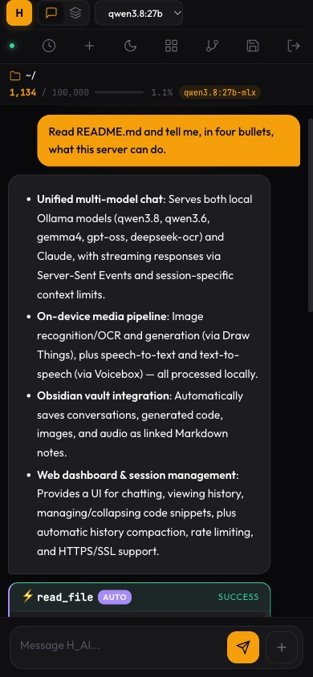
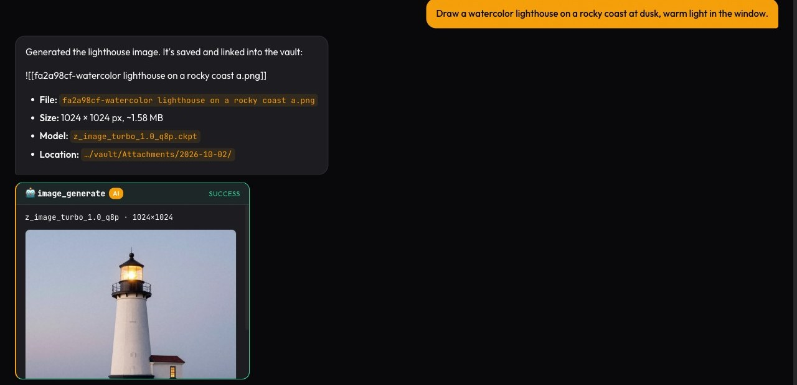
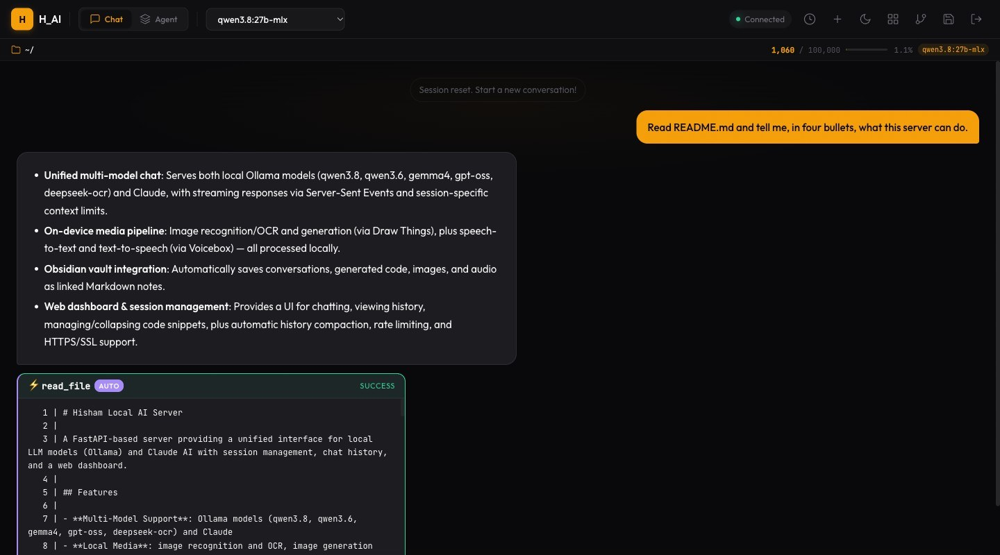
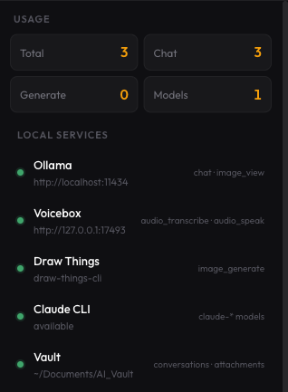

زهقت من إني أعتمد على الـ cloud APIs في كل حاجة. التأخير، والتكلفة، وقلق الخصوصية — كنت عايز AI بتاعي يشتغل محلي، ويرد فوراً، ويفضل private تماماً. فبنيت واحد. محرك AI شخصي شغّال على الـ Mac Studio M4 Max بتاعي، وبوصله من أي جهاز في البيت عن طريق واجهة ويب عملتها بنفسي اسمها H_AI.
الهدف دلوقتي مكتوب في أول الـ to‑do list بتاعة المشروع: مساعد AI محلي، لشخص واحد، كويس كفاية إنه يستبدل أدوات الـ AI الخارجية اللي بدفعلها فلوس وببعتلها بياناتي. كل تغيير بيتقاس على الجملة دي.
الـ hardware
Mac Studio M4 Max
الـ M4 Max بـ 64 GB unified memory اختيار في الجون لتشغيل الـ LLMs المحلية. الـ GPU والـ CPU بيتشاركوا نفس الذاكرة — من غير نسخ بيانات بين الـ RAM والـ VRAM — فالـ models اللي على PC كانت هتحتاج graphics card 24 GB أو أكتر بتشتغل هنا عادي. Ollama هو اللي بيحمّل الـ models وبيعمل الـ inference، والـ MLX builds بتاعته معمولة مخصوص لـ Apple Silicon.
الـ models
التشكيلة اتغيرت تقريباً بالكامل من فبراير. المجموعة الحالية أحدث وأكبر وذاكرتها أطول بكتير:
| الـ model | الـ Context Window | أنسب لـ |
|---|---|---|
| Claude Sonnet | ~150,000 كلمة | الـ default للأسئلة الصعبة — ومعاه fallback محلي automatic |
| Qwen 3.8 27B (MLX) | ~100,000 كلمة | الـ model المحلي الأساسي، والـ vision، والـ fallback لما Claude مش متاح |
| Qwen 3.6 35B-A3B | ~100,000 كلمة | Mixture‑of‑experts — model كبير وتكلفة صغيرة لكل token |
| Gemma 4 26B / 31B | ~100,000 كلمة | reasoning وكتابة بشكل عام |
| Gemma 4 (small) | ~50,000 كلمة | أسئلة اليوم العادية السريعة |
| gpt-oss 20B | ~6,000 كلمة | مهام قصيرة ومحددة |
| DeepSeek-OCR | — | قراية النص من الصور والـ scans |
لسه أقدر أبدّل الـ model في نص المحادثة من الـ header. الجديد إن الـ default بقى Claude، بوصله عن طريق الـ Claude Code CLI، والـ server بيتأكد منه قبل كل رد. لو الـ CLI مش موجود أو عامل logout أو وصل للـ rate limit، الرد بيتحوّل بهدوء لـ Qwen 3.8 — بس عمره ما بيحصل من غير ما أعرف: الـ chat بيعرض تنبيه فيه رسالة الخطأ بتاعة Claude نفسه، لأن لو الـ model نزل لـ model أضعف من غير ما أعرف، هيبان كأن Claude هو اللي بيرد وحش. Claude مريّح، بس مش هو الأساس؛ الشغل الحقيقي هو إني أقفل الفجوة لحد ما الـ models المحلية ما تبقاش محتاجاه.
واجهة الويب
قلب المشروع لسه هو الـ webapp: FastAPI في الـ back end، وvanilla HTML/CSS/JS في الـ front end، ومتاح على HTTPS للابتوب والموبايل والتابلت. في مارس اتعمله redesign كامل، وفي سبتمبر لفّة تظبيط للموبايل: خانة الكتابة كانت 48% من عرض الموبايل وبقت 64%، وكل زرار بقى قد الحد الأدنى للـ touch target.

أبعد من النص: يشوف ويرسم ويسمع
أكبر تغيير السنة دي إن H_AI مبقاش نصوص بس — من غير ما أي حاجة تخرج برّه البيت.
الصور. التوليد بيعدّي على أداة الـ command‑line بتاعة Draw Things، بتلات models لتلات مهام: model «turbo» سريع للـ drafts، وواحد جودته أعلى لما الموضوع يستاهل، وmodel تعديل بيغيّر في صورة موجودة. الصور اللي بتتولّد بتظهر في الـ chat مباشرة وبتتحفظ في الـ vault.

الـ Vision والـ OCR. Qwen 3.8 يقدر يبص على صورة أو screenshot ملصوقة؛ وDeepSeek‑OCR بيقرا النص من الـ scans. تقدر تولّد صورة وبعدين تطلب من الـ vision model يوصفها — لفّة رايح جاي بستخدمها كـ smoke test («a single blue marble» رجعت «a glossy blue stone sphere»).
الصوت. تحويل الكلام لنص والعكس بيعدّوا على Voicebox، شغّال محلي — نفس الـ setup اللي كتبت عنه في توليد الصوت من النص بـ models محلية. الإدخال الصوتي كان أول بند في قايمة «الخطوة الجاية» بتاعتي في فبراير. وخلصت.
ذاكرة بتفضل في البيت
كل محادثة دلوقتي بتتكتب في Obsidian vault كملاحظة Markdown: الكلام اللي اتقال، وأي code اتولّد، وروابط للصور والصوت اللي اتعملوا. المحادثات ممكن تتفرّع، والفرع بيحتفظ برابط لأصله، فالـ vault بيبان كـ graph لتفكيري مشي إزاي، مش مجرد كومة logs.
والأهم إن المساعد يقدر يدوّر في الـ vault ده. «What did we decide about the database?» أو «Search my notes for the gold price» بيعملوا بحث في ملاحظاتي أنا، والرد بيطلع من اللي موجود فيها. دي الحاجة الوحيدة اللي مفيش أداة خارجية تقدر تعملها زيها، لأن الملاحظات موجودة على الجهاز ده بس. ولما مفيش حاجة تطابق، بيقول كده — قبل ما أوصّل ده، لما كنت أسأل model محلي عن ملاحظاتي كان بيألّف واحدة بكل ثقة اسمها «Gold Price History».
نظام الـ Skills
الـ AI مش مجرد chatbot — يقدر يعمل حاجات بنفسه. فيه دلوقتي 30 skill: قراية الملفات وكتابتها، والبحث في الـ code، وgit، وتحميل صفحات الويب، والبحث على الويب، والحسابات، وتوليد الصور والكلام، والتنقل بين المشاريع، والبحث في الـ vault.
الـ model بيطلب أداة بإنه يكتب fenced block قصير. الـ server بيشغّله، وبعدين — وده كان الإصلاح الكبير في الصيف — بيدّي النتيجة للـ model تاني ويخليه يرد من الدليل ده. قبل كده الـ model كان بينده بحث على الويب وبعدين يرد من ذاكرته برضو؛ دلوقتي الإجابات مبنية على اللي الأداة رجّعته فعلاً.
الأدوات اللي للقراية بس بتشتغل فوراً. أي حاجة بتغيّر حاجة — كتابة ملف، أو commit، أو تشغيل صوت يطلع من السماعة — بيظهرلها card تأكيد الأول. لما أوافق، الأداة بتشتغل والـ model بيرد من ناتجها، زي ما بيعمل بالظبط مع الأدوات الـ automatic.

فشل شكله نجاح
أنفع درس في السنة مكانش feature. كان pattern، ودلوقتي مكتوب في أول خطة المشروع:
العَرَض كان تقريباً دايماً واحد: فقاعة إجابة فاضية بتخلص بشكل عادي، كأن الـ model معندوش حاجة يقولها. ورا ده كانت أسباب مختلفة خالص:
«What is 2+2?» مرجّعتش أي إجابة. الـ pattern بتاع الآلة الحاسبة كان بيطابق مسافة واحدة، فحسب expression فاضي وفشل — والـ server اعتبر إن الأداة خلّصت السؤال، فالـ model ما اتسألش أصلاً.
typo في اسم model خلّى الـ stream فاضي. Ollama بيرد بخطأ «model not found»، بس الـ HTTP client مبيطلعش exception عليه، فالـ stream… خلص وخلاص. دلوقتي الخطأ بيظهر في الفقاعة.
Gemma كان بيسكت. دي فضلنا مختلفين عليها أسابيع: أنا كنت أقدر أعيدها 4 مرات من 9، والـ QA agent بتاعي مقدرش خالص. طلع إن Gemma 4 model thinking — كان بيولّد طول الوقت، بس في reasoning field مخفي، وسايب الإجابة الظاهرة فاضية. سؤال الاختبار بتاع الـ QA («Paris») ببساطة ماخلّاهوش يفكر. لما قفلت الـ thinking، الإجابات الفاضية نزلت من 4 من 9 لصفر من 6.
كل واحدة من دول اتصلّحت بإني خليت الفشل يقول هو إيه — خطأ في الفقاعة، أو تنبيه في الـ chat — مش بس بإني قلّلته.
فريق بيراجع الـ code
في سبتمبر إديت المشروع فريق ثابت من الـ AI agents في Claude Code، كل واحد له شغلة واحدة: CEO ماسك الهدف وبيقرر إيه اللي يستاهل، وQA lead بيجرّب بنفسه كل claim من أوله لآخره قبل ما يتقال على أي حاجة إنها خلصت، وsecurity reviewer، ومسؤولين عن الـ dashboard، والـ models، والـ tool calling، والميديا المحلية، والـ vault، والـ operations.
أول security review عملوه لقى سلسلة حقيقية: نص من صفحة ويب اتحمّلت ممكن يوصل للصفحة كـ HTML، وده ممكن بعدين يشغّل الأدوات — طريق من صفحة خبيثة لتشغيل أوامر على الـ Mac بتاعي. اتقفل في نفس اليوم. المراجعات اللي بعدها طلّعت عشرات الـ bugs اللي مش باينة أوي، منها feature تاريخ المحادثات بتاعها عمره ما اشتغل لأن خطأ كان بيتبلع في السكوت. القاعدة اللي طلعت من ده: كل finding لازم يتعمله reproduce قبل ما يتصلّح، ومحدش بيمضي على شغله بنفسه.
الأمان
H_AI معمول من الأساس للـ LAN بس — قرار مقصود، هراجعه لما يبقى فيه سبب أوصل أبعد. جوه الحدود دي:
الوصول: HTTPS في كل مكان بشهادة self‑signed، ومفاتيح الـ API بتتقارن كـ hashes في constant time، وpasswords الـ dashboard متخزّنة بـ bcrypt، وrate limits على الـ API وصفحة تسجيل الدخول الاتنين. الصور والصوت بيستخدموا signed links عمرها قصير بدل ما المفتاح يبان. وصفحة الـ dashboard مبقتش تشيل مفتاح الـ API خالص — المتصفح بيعمل authentication بالـ login session بتاعته بدل كده، ومن صفحات الـ server نفسه بس.
المحتوى اللي مش موثوق: أي حاجة جاية من برّه — صفحة ويب، أو مستند مرفوع، أو ملاحظة قديمة — بتتحاط في fence كـ data قبل ما توصل للـ model، بـ marker عشوائي المحتوى ميقدرش يزوّره. ملف PDF مكتوب فيه «ignore all previous instructions» بيتبلّغ عنه، مش بيتنفّذ. والـ web fetch مينفعش يتوجّه للخدمات الشغّالة على الـ Mac نفسه.
العمليات: أي حاجة بتغيّر في النظام محتاجة تأكيد، ووضع الـ agent التجريبي — اللي ممكن يشغّل أوامر shell الـ model كاتبها — مقفول إلا لما أنا أفتحه.
الـ Architecture
الـ stack لسه بسيط عن قصد:
الـ Backend: FastAPI مع async streaming وPydantic validation. مفيش database — الجلسات والـ logs ملفات JSON على الـ disk، والذاكرة طويلة المدى هي الـ vault بتاع Markdown.
الـ Frontend: Vanilla HTML وCSS وJavaScript، مع Marked.js وHighlight.js. مفيش React ومفيش build step. وهو PWA، فبيتثبّت على الشاشة الرئيسية.
الـ Runtimes بتاعة الـ AI والميديا: Ollama للـ models المحلية، والـ Claude Code CLI لـ Claude، وDraw Things للصور، وVoicebox للكلام. كل واحد خدمة محلية لوحدها؛ لو واحدة وقعت، الـ features بتاعتها بس هي اللي بتقف، ولوحة الخدمات بتوريني أنهي واحدة.

الخطوة الجاية
الصوت خلص. وكمان الصور والرؤية والذاكرة طويلة المدى. اللي فاضل:
قفل الفجوة مع Claude — إني أخلّي الـ models المحلية كويسة كفاية في استخدام الأدوات لدرجة إن الافتراضي بتاع الـ cloud يبقى اختياري. Claude لسه أحسن بشكل واضح في إنه يعرف إمتى يستخدم أداة. الوصول من بعيد، غالباً عن طريق overlay network زي Tailscale، لما يبقى فيه سبب له — المتطلبات مكتوبة، وشيل مفتاح الـ API من الصفحة كان واحد منها. وكمان أكتر من الشغل اللي طلع هو الأهم: إني ألاقي الأماكن اللي بيفشل فيها من غير صوت، وأخليها تتكلم.
مفيش اشتراك للـ models المحلية. ومفيش بيانات بتخرج من الشبكة بتاعتي إلا لو اخترت الـ cloud. model بس الـ hardware بتاعي، وsoftware كويس، وكل حاجة ملكي أنا.